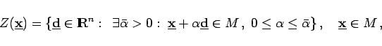
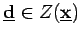
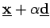
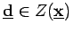
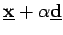
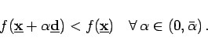
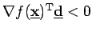
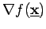
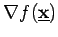

Inhalt Index DeskTop Bronstein

 Optimierung Nichtlineare Optimierung Problemstellung und theoretische Grundlagen Optimalitätsbedingungen
Optimierung Nichtlineare Optimierung Problemstellung und theoretische Grundlagen Optimalitätsbedingungen


|  | (18.34) |
wobei Richtungen mit  bezeichnet sind. Ist , dann liegen alle Punkte des Strahls  für hinreichend kleine
bezeichnet sind. Ist , dann liegen alle Punkte des Strahls  für hinreichend kleine  -Werte in
-Werte in  .
.
|  | (18.35) |
In einem Minimalpunkt existiert keine Abstiegsrichtung, die zugleich auch zulässig ist.
Ist f differenzierbar, so folgt aus  die Abstiegseigenschaft der Richtung . Mit  ist der Nablaoperator bezeichnet, so daß  den Gradienten der skalaren Funktion f an der Stelle
ist der Nablaoperator bezeichnet, so daß  den Gradienten der skalaren Funktion f an der Stelle  darstellt.
darstellt.